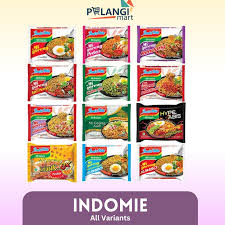

Resep Indomie


Indomie adalah produk mie instan khas Indonesia yang sangat populer di kalangan masyarakat.
Bahan-Bahan:
Alat-Alat:
- Panci
- Saringan
- Mangkuk
- Sendok
Cara Memasak:
- Buka kemasan Indomie
- Buka bumbu-bumbu Indomie
- Masukkan bumbu-bumbu ke dalam mangkuk
- Masukkan air ke dalam panci
- Setelah air panas, masukkan mie ke dalam air
- Tunggu 5 menit sampai mie matang
- Masukkan mie matang ke dalam mangkuk yang sudah ada bumbunya
- Mie siap dimakan